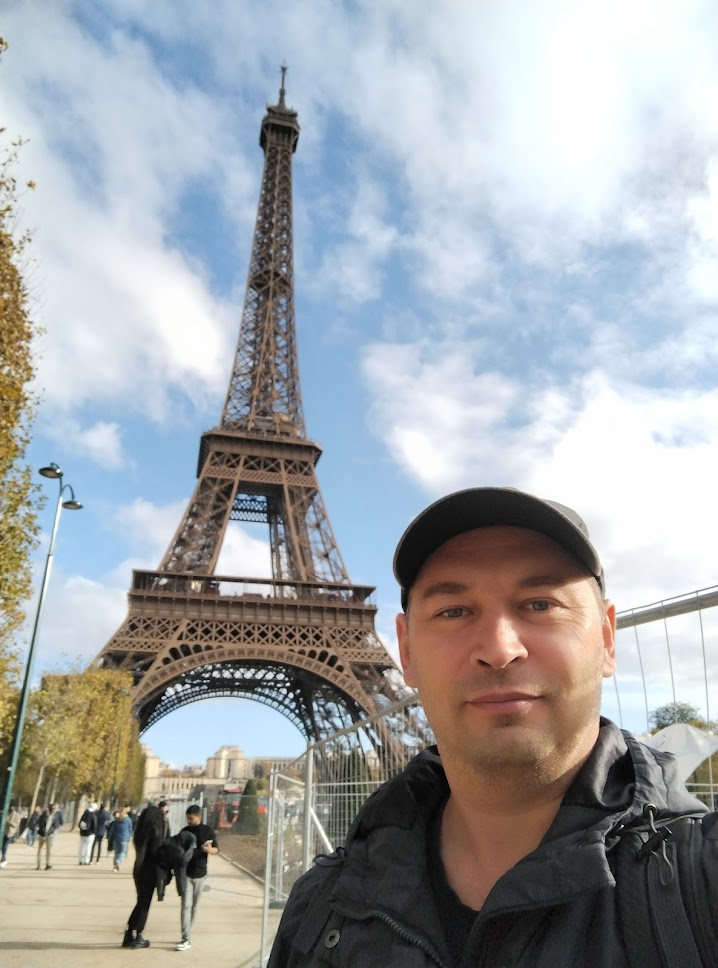
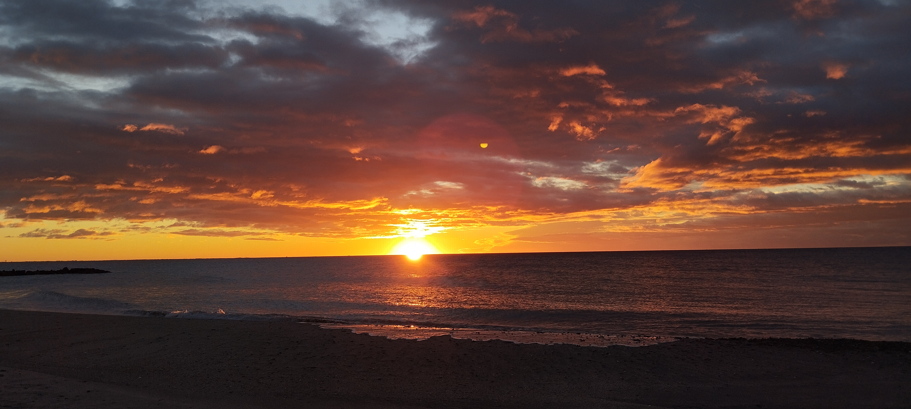

Oleksandr Hontarev
I don’t know what to write, so thank goodness there will be verses from the official letter of Taras Grigorovich Shevchenko!
O lovely maidens, fall in love,
But not with Muscovites,
For Muscovites are foreign folk,
They do not treat you right.
A Muscovite will love for sport,
And laughing go away;
He’ll go back to his Moscow land
And leave the maid a prey
To grief and shame…
The mighty Dnieper roars and bellows,
The wind in anger howls and raves,
Down to the ground it bends the willows,
And mountain-high lifts up the waves.
The pale-faced moon picked out this moment
To peek out from behind a cloud,
Like a canoe upon the ocean
It first tips up, and then dips down.
The cocks don’t crow to wake the morning,
There’s not as yet a sound of man,
The owls in glades call out their warnings,
And ash trees creak and creak again.te

About my family
I was thirteen. I herded lambs
Beyond the village on the lea.
The magic of the sun, perhaps,
Or what was it affected me?
I felt with joy all overcome,
As though with God….